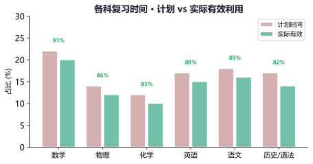
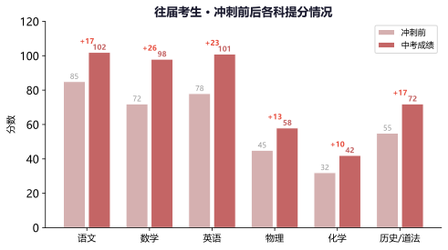
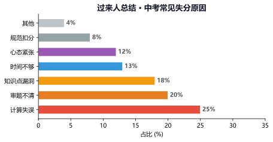
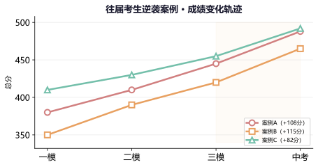
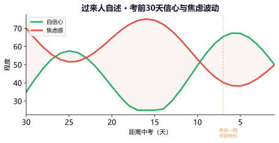
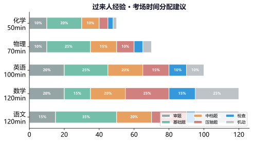
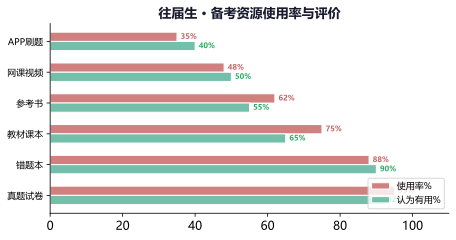
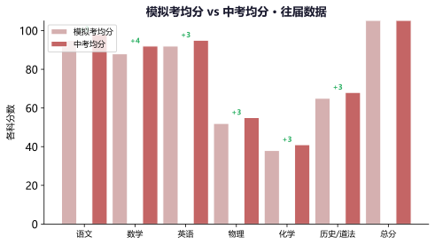
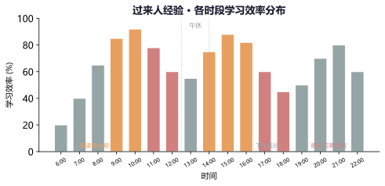

专题一：时间规划经验
过来人的时间管理心得
多数人踩过的坑：根据对往届考生的调查，超过70%的人认为"冲刺期时间规划不合理"是他们最大的遗憾。最常见的三个问题：①前期发力过猛后期乏力（一开始每天学10小时，到5月就坚持不住了）；②各科时间分配失衡（只学喜欢的科目，逃避弱科）；③没有留出缓冲时间（计划排得太满，一旦被打断就全盘崩溃）。
过来人的时间规划建议：
① 前松后紧不如前紧后稳——前期（3-4月）保证每天6-7小时高效学习，后期（5-6月）调整到5-6小时，留出更多时间给心态调整和身体状态。
② 每周留半天"自由时间"——专门用来处理本周未完成的任务或解决突发问题，避免计划崩盘。
③ 用"时间块"代替"时间点"——不要精确到几点几分做什么，用上午/下午/晚上三大块来规划更灵活。

各科复习时间——计划 vs 实际有效利用（往届数据）
过来人的话："我最后悔的就是3月份太猛了，每天6点起学到11点，结果到5月中旬就完全学不动了。后来才发现，中考是长跑不是短跑，节奏比强度重要得多。"——2025届 李同学
例题1：小张从3月开始每天学习10小时，到5月初发现自己注意力下降、做题效率变低、早上起不来。请分析原因并给出调整方案。
分析：
这是典型的"前期发力过猛导致后期疲劳综合征"。人的精力和意志力是有限资源，长时间高强度学习会导致：
(1) 身体疲劳积累，免疫力下降
(2) 大脑保护性抑制，学习效率反而降低
(3) 心理倦怠，失去学习动力
调整方案：
(1) 立即降低强度：每天学习时间从10小时降到6-7小时。
(2) 保证午休30分钟 + 每晚7.5小时睡眠。
(3) 每天安排30分钟运动（慢跑、跳绳等）。
(4) 调整心态：接受"少即是多"，效率比时长重要。
(5) 用一周时间过渡，重新建立可持续的节奏。
例题2：以下哪种时间规划方式更合理？（ ）
A．每天精确到分钟的计划表，严格执行
B．只定每天的学习总量目标，不限具体时间
C．上午理科、下午文科、晚上综合的分块模式，每块有弹性时间
D．周末全天只学最弱的科目
解析：
A✗：精确计划缺乏弹性，一旦被打断容易产生挫败感，导致计划崩溃。
B✗：没有基本的时间约束容易拖延，总量目标难以量化检测。
C✓：分块规划兼顾了科目轮换和弹性空间，是往届生验证最有效的方式。
D✗：全天只学一科效率递减严重，大脑需要不同内容的交替刺激。
答案：C
练习1：回顾你过去一周的时间安排，找出"时间黑洞"（被浪费的时间段）和"高效时段"（学习效率最高的时间）。记录在笔记本上。
往届生最常见的"时间黑洞"：早上一来先看手机15分钟、午休后发呆20分钟、学习时频繁起来喝水吃零食。
练习2：按"上午/下午/晚上"三大块，制定一份下周的弹性时间规划表，每块之间留出30分钟的缓冲时间。
缓冲时间非常重要！突发情况（学校临时加课、身体不舒服等）是常态，有缓冲才能从容应对。
专题二：各科备考经验
高分考生经验分享
语文高分经验：中考语文110+的往届生分享的共同点——"阅读是拉分关键"。古诗文默写必须满分（每天10分钟足矣），现代文阅读练的是"答题规范"而非"读懂了没"（学会从原文定位、用术语答题），作文准备不背整篇范文而是积累"素材包"（3个万能人物+3个时事素材+5个金句）。
数学高分经验：数学从90到110+的关键不是做难题，而是"保基础、抓中档、稳压轴"。选择题前10题正确率100%（练到条件反射），填空题注意细节（单位、取值范围），中档题按题型形成"解题模板"。错题本上的题要反复做直到"闭着眼睛也能写对"。计算能力每天练——计算失分是最冤枉的。
英语高分经验：单词坚持背到考前最后一天。听力训练"精听+泛听"结合——精听做真题逐句听写，泛听磨耳朵。阅读理解先读题再读文章，"关键词定位法"是最高效的。作文模板要有但不要死套——学会"模板+变通"，开头结尾有亮点，中间内容充实。
物理化学高分经验：物理重"模型思维"——力学电学核心模型必须烂熟于心，实验题必考教材实验但问法灵活，计算题规范写步骤（写公式→代入→结果→答）。化学方程式是最基本的底子，推断题的"题眼"要敏感（颜色、沉淀、气体等），实验题多问几个"为什么这样操作"。

往届考生 · 冲刺前后各科提分情况（真实数据）
"数学从85到112，我做了三件事：第一，把近5年真题的每道题都分析了三遍；第二，错题本上的题每道都做了至少3遍；第三，每天坚持练20分钟计算。没有捷径，就是这三个习惯。"
——2025届 王同学（中考数学112分）
例题1：物理一直上不去（40/70），做了很多题也没效果，怎么回事？
过来人分析：
"做了很多题但没效果"通常是因为没有"对症下药"。建议三步走：
(1) 先诊断：找一套真题做一次，分析错题属于哪个板块（力学、电学、热学、光学），确定薄弱板块。
(2) 再攻克：针对薄弱板块，回归教材重新学习概念，然后做该板块的专项训练（而非整套卷子）。
(3) 后验证：做套卷检验该板块是否真的提升了。
过来人的教训：盲目刷整卷是最低效的复习方式。精准打击薄弱板块，才能快速提分。
例题2：英语作文总是扣分多，背了范文也用不上，怎么办？
过来人经验：
(1) 背范文要"拆解"而非"整篇背"——把范文拆成开头句、过渡句、结尾句、高级表达，各记各的，考试时灵活组合。
(2) 积累"万能过渡词"：however, moreover, furthermore, in addition, as a result等，让文章有逻辑层次。
(3) 每周精写2篇，写完对照范文逐句对比：人家的开头为什么好？人家的连接词用了哪些？
(4) 书写工整！书写工整！书写工整！同样内容的作文，工整和潦草能差3-5分。
关键：中考作文评分中，扣题第一，结构第二，语言第三，书写第四。
练习1：选择你目前最薄弱的一科，按"诊断→定位弱项→专项训练→复测"的流程制定一个2周提升计划。
好计划的标准：可执行（每天具体任务）、可检测（有目标分数）、有反馈（定期自测）。
练习2：采访一位你身边已经参加过中考的学长/学姐，问他们各科最想给的建议是什么，记录下来对比自己现在的复习方法。
过来人的一句话经验，往往比做10道题更有价值。
专题三：常见踩坑实录
过来人的血泪教训
踩坑1：盲目刷题不总结——这是往届生提到最多的遗憾。刷了100套卷子但从不分析错题，做对的继续会对、做错的继续错。刷题的目的是"发现漏洞"，而"填补漏洞"靠的是分析和总结。刷一套题 + 花同样时间分析，效果远好于刷三套题但不分析。
踩坑2：忽视基础题只攻难题——很多中上水平的考生喜欢花大量时间做压轴题，却在中档题和基础题上丢分。中考70%是基础和中档题（约350分/510分），压轴题的分数占比其实很小。先把基础中档题的正确率提到95%以上，再去攻压轴题。
踩坑3：考前熬夜透支——考前一周还在每天学到一两点，结果考试时大脑发蒙。这不是努力，是透支。考前一周保证充足的睡眠比多做几道题重要得多。

过来人总结 · 中考常见失分原因——明确主攻方向
| 踩坑 | 表现 | 后果 | 过来人建议 |
|---|
| 盲目刷题 | 只做不分析，错了只看答案不改 | 同样错误反复犯 | 刷题:分析 = 1:1 |
| 忽视基础 | 难题花2小时，基础题看一眼 | 基础题丢分严重 | 70%时间给基础中档 |
| 考前熬夜 | 考前一周每天学12h+ | 考场大脑空白 | 考前一周逐步减负 |
| 逃避弱科 | 只学擅长的科目 | 弱科拖后腿严重 | 弱科每天固定时间 |
| 过度焦虑 | 每天想"考不好怎么办" | 无法专注学习 | 写下焦虑→制定预案 |
| 死记硬背 | 不理解只背诵 | 题目一变就不会 | 理解后再记忆 |
| 计划太满 | 每天计划精确到分钟 | 计划一天就崩了 | 留30%弹性时间 |
例题1：小明一模考了450分，他觉得"只要拼命刷题就能涨分"，于是每天做2套数学卷、2套英语卷，错题只是看一眼答案就过。一个月后二模还是450分。问题出在哪？
分析：
这是典型的"盲目刷题综合症"。问题在于：
(1) 刷题量≠学习效果——只做不分析，不会的依然不会。
(2) 错题只看答案=最无效的学习方式——大脑没有经历"自己思考→做错→找到原因→重新做对"的完整过程。
(3) 没有针对性——每天机械地刷整卷而不是查漏补缺。
改进方案：
(1) 停刷整卷1周，把所有错题整理归类。
(2) 对每道错题做"深度分析"：为什么错→哪个知识点没掌握→找同类题再练。
(3) 每做一套新卷，花1.5倍时间分析总结。
(4) 建立"错题消灭清单"，做对一道划掉一道。
例题2：关于"逃避弱科"的现象，下列说法正确的是？（ ）
A．把精力都放在优势科目上提分更快
B．弱科提分空间大，投入产出比更高
C．弱科实在学不会就放弃，把优势考到满分
D．冲刺期应该只刷套卷，不分科目
解析：
A✗：优势科目从90到100很难（边际效益递减），但弱科从40到60相对容易。
B✓：弱科提分空间大！比如物理从45提到60（+15分）比数学从110提到115（+5分）容易得多。
C✗：完全放弃弱科是下策。中考看总分，各科均衡比一科突出更重要。
D✗：不分科目地刷套卷不能解决弱科问题，需要在套卷之外给弱科加"专项训练"。
答案：B
过来人经验：每天优先学弱科（精力最好的时候），优势科目放在后面（保持手感即可）。
练习1：对照上方的"踩坑一览表"，诚实地自我评估——你目前踩了哪些坑？选择最严重的一个，写下具体的改进措施。
自我觉察是改变的第一步。认清自己的问题比盲目努力更重要。
练习2：找一套你最近做过的卷子，统计基础题、中档题、难题的失分情况，看看你的失分主要集中在哪个档次。
如果基础中档题失分超过总分10%，说明你的复习重心应该放在基础上而不是难题上。
专题四：逆袭案例与方法
从低分到高分的真实故事
逆袭的共同特征：整理近三届中考逆袭案例（提分80分以上），发现他们有几个共同点：①强烈的提分动机（"我一定要考上XX高中"）；②精准的诊断分析（清楚地知道自己的薄弱点在哪）；③持续的执行力（不是三天打鱼两天晒网，而是每天坚持做同样的事）；④科学的提分顺序（先抓基础中档题，再攻难题）。
逆袭方法论：三段提分法：
第一阶段（基础补漏）：找出所有基础和中档题的知识漏洞，逐章节回补。重点是把"不会的"变成"会的"。目标：基础中档题正确率90%+。
第二阶段（规范训练）：规范做题习惯——审题划关键词、计算写步骤、检查有方法。重点是把"会做但做错的"变成"做必对"。目标：会做的题不再丢分。
第三阶段（实战冲刺）：限时套卷训练，培养考试节奏和时间感。重点是把"能做对"变成"考试时也能做对"。目标：稳定发挥平时水平。

往届考生逆袭案例 · 成绩变化轨迹——从一模到中考的蜕变
"一模才380分，全班倒数。有天晚上我认真想了一夜：我真的只能这样了吗？第二天开始，我把手机交给妈妈，每天按计划学习。最难的不是做题，而是坚持。最后中考488分，虽然不是最高分，但我对得起自己了。"
——2025届 赵同学（一模380→中考488）
例题1：一模总分370，想冲刺450+（提分80+），剩下90天该怎么规划？
80天逆袭方案：
第一阶段（第1-4周，基础补漏）：
· 排查各科基础：对照考纲，逐章节标记"已掌握/半懂/完全不会"。
· 主攻"半懂"板块：这些是提分最快的地方。每天优先复习这些内容。
· 数学：确保代数运算、方程求解、基础几何的100%正确。
· 物理：力学基础概念+公式（50%的分值在这里）。
· 英语：中考高频词1500个，每天背50个，一个月过完。
第二阶段（第5-7周，规范训练）：
· 开始做真题（先做近3年的，留最近1年的最后做）。
· 每套题重点分析"会做但做错的"——这是最冤的失分。
· 训练审题习惯：每题用笔划出关键条件和问题。
· 数学计算专项：每天10道纯计算题，要求100%正确。
第三阶段（第8-12周，实战冲刺）：
· 每周3-4套限时模拟卷，完全按中考时间。
· 重点练时间分配：找到最适合自己的答题节奏。
· 回归基础：考前两周减少新题量，以回顾错题和笔记为主。
注意：370→450这个区间，提分主要靠"基础中档题不失分"，而不是攻克难题。压轴题的目标是拿到前1-2问的分数即可。
例题2：逆袭的关键因素中，以下哪项是最重要的？（ ）
A．报最贵的补习班
B．每天学习到凌晨
C．清楚的自我诊断 + 针对性的行动 + 持续的执行
D．买最多的复习资料
解析：
A✗：报班不是关键，关键是知道自己需要补什么。很多逆袭成功的学生没报任何补习班。
B✗：熬夜学习效率低，长期看反而拖后腿。逆袭靠的是效率而非时长。
C✓：三条缺一不可——诊断让你知道方向，行动让你进步，坚持让你到达。
D✗：资料在精不在多。大多数逆袭生只用了真题+教材+错题本三样东西。
答案：C
练习1：写出你的"中考目标分数"和"现在分数"，计算出分差，然后逐科分析：每科提分最容易的"低垂果实"在哪？（投入最少时间就能提分的点）
通常"低垂果实"是：计算准确率、基础概念、审题习惯——这些不需要大量刷题，靠改变习惯就能提分。
练习2：找一个真实的逆袭案例（网上或身边），分析他/她成功的原因，写出3条你可以借鉴的具体做法。
别人的成功不能复制，但别人的方法可以借鉴。关键是找到适合你自己的方式。
专题五：考前心态经验
过来人的心路历程
考前心态的普遍规律：根据往届生反馈，考前心态大致经历"四个阶段"——①斗志满满期（3-4月，觉得啥都能学）；②疲惫焦虑期（5月上旬，感觉学不动了）；③瓶颈恐慌期（5月下旬-6月初，觉得啥都不会了）；④坦然接受期（考前1周，爱咋咋地）。这是完全正常的心理曲线，几乎每个人都会经历。
过来人对抗焦虑的实战方法：
① 写下焦虑——把担心的具体事情写下来，越具体越好。写完后会发现90%的焦虑其实并不合理。
② 运动出汗——每天15-20分钟中等强度运动，效果堪比轻度抗焦虑药物。
③ 和朋友/家人聊天——憋在心里是焦虑的放大器，说出来才发现大家都一样。
④ 行动是最好的解药——感到焦虑时，不要坐着想，立即去做一件具体的学习任务。动起来之后焦虑自然消退。

过来人自述 · 考前30天信心与焦虑波动——最后7天是关键转折
例题1：考前两周突然觉得自己"什么都不会"，做题全错，心态要崩了，怎么办？
过来人经验：
首先，这是完全正常的现象！几乎所有考生在考前1-2周都会经历"考前高原反应"——感觉知识从脑子里消失了。
(1) 保持冷静：这是大脑的保护机制，不是你真的不会了。上考场后自然就会想起来。
(2) 停止做新题：考前两周不做陌生题型，只回顾错题本和基础知识。
(3) 调整预期：接受"我不可能把所有题都做对"，把目标定为"正常发挥平时水平"。
(4) 和信任的人聊聊：你会发现大家都一样，心里会踏实很多。
(5) 深呼吸练习：4-7-8呼吸法（吸气4秒→憋气7秒→呼气8秒），每天练习几次。
一个重要认知："考前觉得什么都不会"是错觉。你过去一年的积累不会消失，考场上题一拿到手，条件反射就回来了。
例题2：以下哪种考前心态调整方法被证实最有效？（ ）
A．不断告诉自己"我能行"
B．把担心的事写下来 + 制定应对预案
C．完全不想考试的事，转移注意力
D．和其他同学比进度来激励自己
解析：
A✗：简单的积极暗示有效但有限，如果自己都不相信，反而会产生认知失调。
B✓：把模糊的焦虑变成具体的问题（"我最害怕语文阅读考到议论文→那我现在就练3篇议论文"），焦虑立即减半。有预案就有控制感。
C✗：完全不考虑不现实，压抑焦虑反而会反弹。适度关注并管理才是正解。
D✗：和他人比进度只会加剧焦虑。每个人的节奏不同，按自己的计划走就好。
答案：B
练习1：写下你的"考前焦虑清单"——把你能想到的所有担心都写下来（比如：语文作文跑题、数学压轴题不会、英语听力听不清……），然后为每一条写出具体的应对方案。
焦虑往往来源于"不确定性"。有了预案，不确定性就变成了确定性，焦虑自然减轻。
练习2：设计一份你自己的"考前一周心态维护计划"——包括每天的运动安排、作息调整、放松活动、学习内容。
这份计划的核心目标不是"多学东西"，而是"保持最好的精神状态走进考场"。
专题六：考场实战经验
考场上必须知道的20件事
进考场前：提前40分钟到考点（留出找考场、上厕所、平复心情的时间）。带齐物品（准考证、身份证、文具），但不要带新文具进考场——用平时用惯的笔和尺子，手感更稳定。穿舒适的衣服，备一件外套（考场空调可能很冷）。
发卷后5分钟：不要急着做题！先做三件事——①检查试卷是否有缺页、印刷不清；②填写个人信息（姓名、准考证号等）；③浏览全卷（了解题型、题量、难度分布，做到心中有数）。"磨刀不误砍柴工"，这5分钟的价值远超你的想象。
答题中：坚持"先易后难"原则——遇到不会的题标记后跳过，做完其他题再回来看。选择题做完立即涂卡（不要等到最后集中涂）。计算题写清楚步骤（步骤分通常占50%）。主观题分点作答（用①②③标注），卷面整洁会加分。
遇到突发情况：头脑空白→深呼吸+喝水（举手申请）；想上厕所→举手申请（不要憋）；笔没水了→备用笔（带2-3支）；时间不够→优先做分值高的题。

过来人经验 · 各科考场时间分配建议——合理分配是稳定发挥的保障
例题1：数学考试还剩30分钟，但最后两道大题还没做（分值共24分），前面还有一道选择题不确定。应该先做哪个？
过来人策略：
按照"投入产出比"决策：
(1) 先花2分钟检查那一道选择题——如果会做，确保做对；如果确实不会，蒙一个（不留空）。
(2) 剩下28分钟给两道大题。先看两道题的第一问（通常较简单），争取两道的第一问都拿到（约8-10分）。
(3) 然后选其中更有思路的一道，做第二问（争取再拿4-6分）。
(4) 如果还有时间，另一道的第二问尽量写步骤。
核心原则：考场上不要"恋战"。一道题卡住5分钟没进展就跳，留到最后集中处理。
例题2：英语听力考试中，有一道题完全没听清，下面题已经开始播了。应该怎么办？
考场应对：
(1) 立即放弃该题，跟上当前正在播放的题目。不要"追溯式"思考错过的题，否则会错过更多。
(2) 利用题目间隙，快速猜测没听清的题（根据上下文语境和选项逻辑）。
(3) 听力结束后，如果有时间，结合记忆和逻辑推理选一个最可能的答案。
(4) 调整心态：丢了一道题（1-2分）的代价远小于因为想这道题而错过后面所有题（可能丢10+分）。
过来人提醒：听力前一定要先读题！利用播放"听前说明"的时间，快速扫读题目和选项，预判对话内容。
练习1：在接下来的模拟考中，有意识地练习"先易后难"策略——标记跳过难题，做完所有会做的题后再回头钻研。
很多同学知道这个策略但考试时做不到。一定要在平时模拟考中刻意练习，形成习惯。
练习2：列出你自己的"考场应急预案"——至少写出5种可能遇到的突发情况和你的应对方案（参考本节的"突发情况处理"）。
提前想好所有可能出问题的情况和应对方案，上考场心里就有底了。
专题七：备考资源与工具
资源选择经验
过来人最推荐的备考资源：排名第一的永远是中考真题（近5年本省真题 + 近3年重点省份真题）。第二名是教材（很多同学冲刺期就把教材扔一边了，但中考命题的依据是教材，回归教材能发现很多被忽略的细节）。第三名是错题本（不是形式精美的笔记本，而是你真正用来分析错误的记录本）。
资料在精不在多：往届生普遍反映"买了3-5本教辅最后只做了半本"。原因不是不努力，而是资料太多反而分散了精力。建议原则：①每科1本核心教辅+1本真题+1本错题本；②教辅不在多，在于做完、做透；③网络资源（视频课、APP）作为补充而非主食。

往届生 · 备考资源使用率与评价——真题和错题本最受认可
| 资源类型 | 推荐指数 | 使用建议 | 常见误区 |
|---|
| 真题卷 | ★★★★★ | 近5年本省真题优先 | 做一套扔一套不分析 |
| 错题本 | ★★★★★ | 分类整理+反复重做 | 只整理不复看 |
| 教材课本 | ★★★★ | 回归基础+查漏补缺 | 冲刺期再也不翻 |
| 教辅书 | ★★★ | 每科1本做透足矣 | 买了一堆做不完 |
| 网课视频 | ★★★ | 针对弱项看专题课 | 看得多练得少 |
| APP刷题 | ★★ | 碎片时间使用 | 刷了没深究错题 |
例题1：小丽买了5本数学教辅、3本物理教辅，每天在不同资料间切换，觉得每本都只做了一点点。她应该怎么做？
过来人建议：
(1) 精简资料：每科只留1本最核心的教辅 + 真题卷 + 错题本。
(2) 剩下的教辅先收起来，等把1本做透了再考虑换。
(3) 做透的标准：教辅上的每道题都做了一遍、错题都分析了、知识点都梳理了。
(4) 人的精力有限，资料太多只会造成"选择焦虑"，反而降低学习效率。
过来人经验："中考复习不是比谁的书多，而是比谁把一本做透了。"刷透一本教辅的人，分数往往高于翻了三本但每本只做一半的人。
例题2：关于备考资源的使用，以下哪项做法最合理？（ ）
A．所有科目都用同一本教辅
B．每天在不同资料间切换保持新鲜感
C．优先使用真题，配合一本核心教辅查漏补缺
D．完全放弃纸质资料，只用APP刷题
解析：
A✗：各科特点和需要不同，不适合用同一本。
B✗：频繁切换资料会破坏学习的连续性和深度。
C✓：真题是最有含金量的备考资源，辅以教辅进行专题训练，是最佳组合。
D✗：APP适合碎片时间辅助使用，不能替代纸质深度学习和系统训练。
答案：C
练习1：清点你手头所有的备考资料，评估每本的使用情况。精简到每科1本核心教辅，把暂时不用的收起来。
书桌上只放当前需要的资料，减少视觉干扰和选择焦虑。
练习2：制定一份"错题本使用规范"——如何分类、如何标记、复习频率、出库标准等，然后严格执行。
好的错题本是你提分速度最快的地方。值得花时间把规范建好。
专题八：中考后的反思
如果重来一次会怎么做
"如果重来一次"的三大反思：在往届生的回顾中，最常听到的三句话——"如果能早点开始整理错题就好了"（错题本建立得越早，后期复习越轻松）；"如果能少熬夜多睡觉就好了"（睡眠不足导致的学习效率下降远比想象中严重）；"如果能少焦虑多行动就好了"（焦虑浪费的时间比任何事都多，行动起来是焦虑的天然解药）。
中考到底考什么：考了三年回头看，中考考的不仅是知识——①考心态（谁能在压力下保持冷静谁就赢了一半）；②考习惯（良好的学习习惯比聪明更重要）；③考耐力（谁能坚持到最后谁就是赢家）；④考方法（科学的方法比死记硬背高效10倍）。知识只是载体，真正的较量是在知识之上的综合素质。

模拟考均分 vs 中考均分 · 往届数据——中考通常比模拟考略高
对后来者的寄语：（来自往届生的真心话）
"中考没有那么可怕，但也没有那么简单。认真对待每一天，结果不会辜负你。"
"无论考得好坏，中考只是人生的一个节点，不是终点。全力以赴就好。"
"相信你的努力，它不会骗你。那些熬过的夜、做过的题、流过的泪，最终都会变成分数回报你。"

过来人经验 · 各时段学习效率分布——找到你的高效时段
例题1：如果给即将开始冲刺的学弟学妹一句最重要的建议，你会说什么？请结合往届生的反思给出你的答案。
参考回答（综合往届生最有价值的建议）：
"从今天起，做三件事：第一，准备一个错题本，每道错题都认真分析原因；第二，每天保证7.5小时睡眠，不熬夜；第三，焦虑的时候不要坐着想，站起来做——做一道题、背一个单词都可以。坚持到中考那天，你一定会感谢现在的自己。"
为什么这三件事最重要？错题本解决"方向问题"（精准提分），睡眠解决"效率问题"（保持最佳状态），行动解决"心态问题"（用行动对抗焦虑）。三件事互为支撑，缺一不可。
例题2：以下哪一项是往届生反思中"最后悔"的事情？（ ）
A．没有报补习班
B．没有买更贵的资料
C．没有重视基础，一味攻难题
D．没有换一个新书包
解析：
A✗：大多数逆袭成功的同学并没有报昂贵的补习班。
B✗：资料在精不在多。
C✓：这是往届生提到最多的遗憾——"如果把攻难题的时间用在搞懂基础上，分数会高很多。"
D✗：无关选项。
答案：C
过来人寄语：中考不考"你做了多少道难题"，而考"你掌握了多少基础和中档题"。把基础打牢，就是最高效的备考策略。
练习1：假设中考结束后，你给下一届学弟学妹写一封"备考建议信"，写出你最想说的3条建议。认真写，写完保存好，中考后看看和实际的差距。
这个练习的价值在于——让你从现在就开始反思自己的备考策略，及时调整。
练习2：认真思考并回答：你想成为怎样的人？中考在你的长远人生中扮演什么角色？想清楚这个问题，你的备考会更有方向和动力。
学习的意义不仅仅是为了考试。想明白"为什么而学"，比"怎么学"更重要。当你真正想明白为什么要考好时，方法自然就有了。